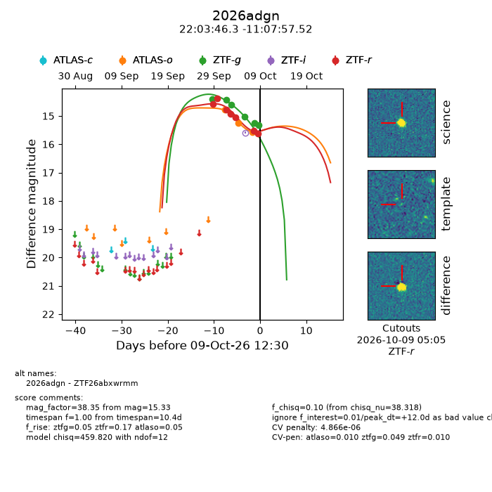
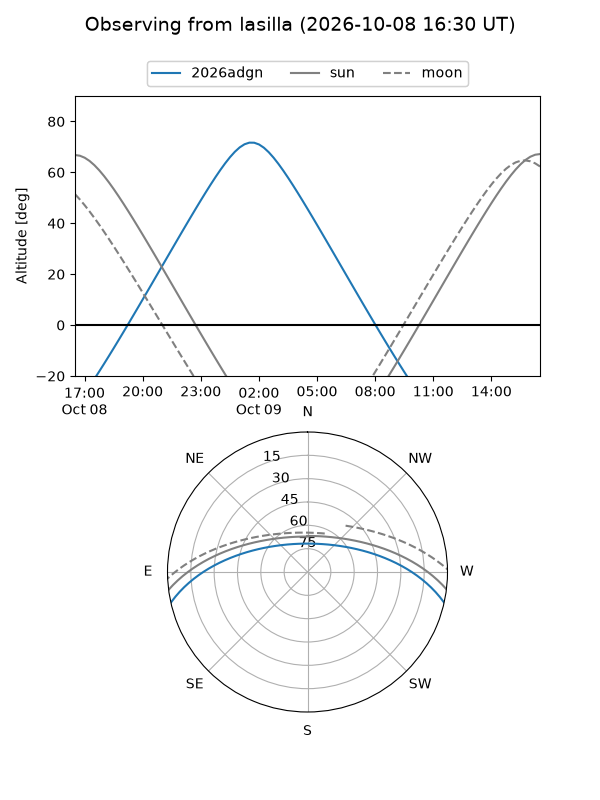
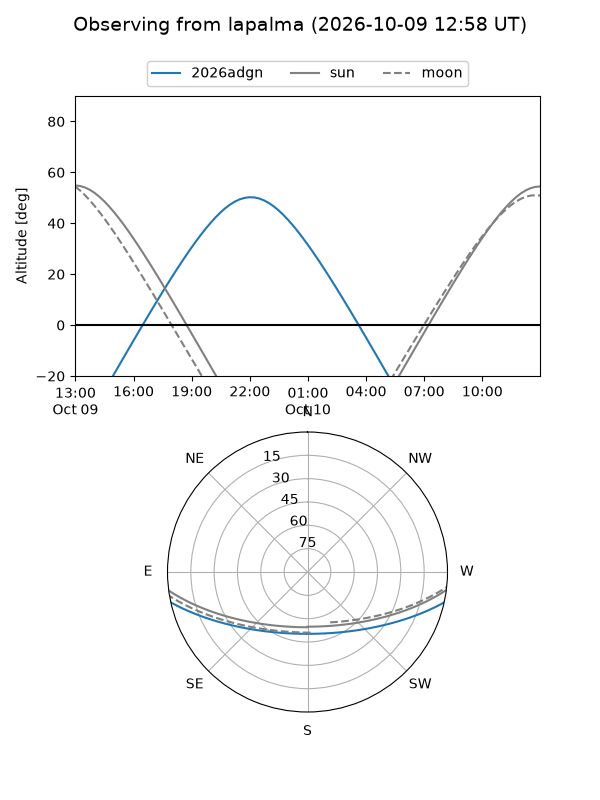
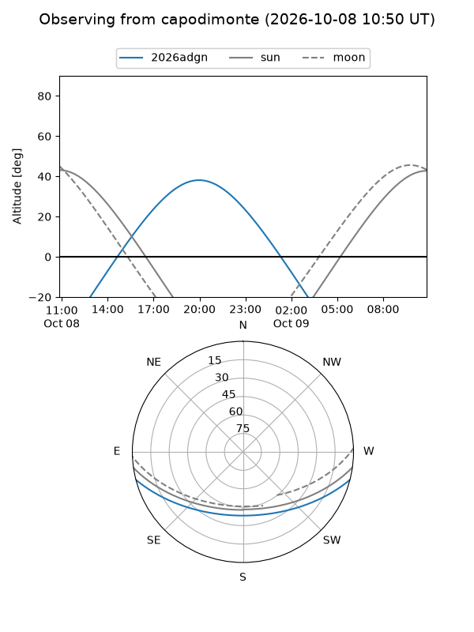
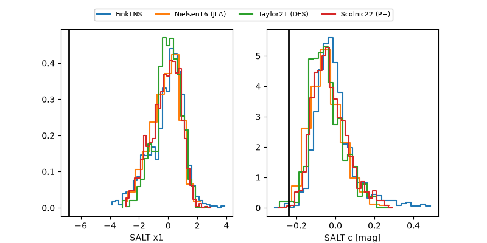

2026adgn
Target 2026adgn at 2026-10-09 12:32
Aliases and brokers:
FINK-ZTF: ztf.fink-portal.org/ZTF26abxwrmm
Lasair-ZTF: lasair-ztf.lsst.ac.uk/objects/ZTF26abxwrmm
ALeRCE-ZTF: alerce.online/object/ZTF26abxwrmm
YSE-PZ: ziggy.ucolick.org/yse/transient_detail/2026adgn
TNS name: wis-tns.org/object/2026adgn
Direct TNS query: direct search
alt names
ZTF26abxwrmm (ztf,fink_ztf)
2026adgn (tns,yse)
Coordinates:
equatorial (ra, dec) = 330.9429,-11.13264
equatorial (HMS+DMS) = 22:03:46.30,-11:07:57.52
galactic (l, b) = (46.7386,-47.54745)
Flags:
peak dt: +12.0
likely cv: !!
Photometry:
last atlaso=15.57, ztfg=15.33, ztfr=15.62
3 atlaso, 6 ztfg, 7 ztfr detections
Lightcurve

Visibility



Additional plots
